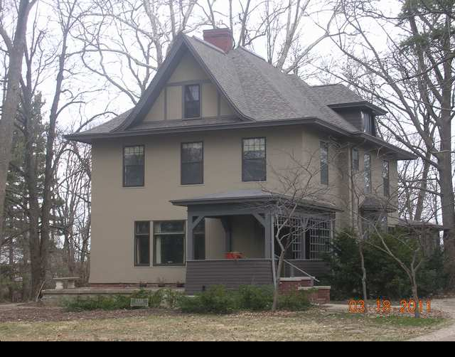

1316 E. Washington

- Lyman Graham Residence
- First was Lyle and Iren Funk, Helen Davis Stevenson bought it in 1906
- Best known as home of Adlai E. Stevenson II
- House was Victorian colonial in design, and the siding was clapboard
- Helen Davis Stevenson hired Pillsbury to remodel it into a kind of English Arts and Crafts
- Most of front porch removed c1948 when Elizabeth “Buffie” Stevenson moved to it so she could be with her brother, the new Illinois Governor